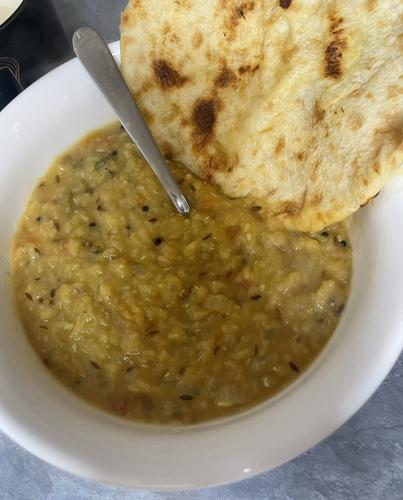

HOME
Yellow Dahl Fry
Please Note: This is not my cultural food so this is a yassified version

Ingredients
Main Recipe
- 1/2 Cup - Moong Dal (Yellow Lentils)
- 1 - Small White Onion
- 1 - Large Tomato
- 1 TBSP - Ghee
- 1/2 TSP - Cumin Seeds
- 1 TSP - Ginger
- 1 - Green Chili Chopped and Deseeded
- 4 - Curry Leaves
- 1/8 TSP - Tumeric
- 1/4 TSP - Red Chili Powder
- 1/2 TSP - Garam Masala
- 2 Cups - Water
For Tempering
- 1 TBSP - Ghee
- 3 - Garlic Cloves Crushed
- 1 - Red Chili Dried
- 1/4 TSP - Mustard Seeds
- 1/2 TSP - Cumin Seeds
- 1/8 TSP - Asafoetida Can substitute with garlic powder
- 1/4 TSP - Red Chili Powder
Method
- Add Moong Dal to a bowl and rinse until the water runs clear. Once clear, add the Dal to a bowl of water and let sit for 30 minutes
- Chop onions, tomatoes, green chilies, and ginger
- Add Ghee to a pan and once melted add cumin seeds. When the seeds begin to pop, add ginger, green chilies and curry leaves
- Fry until aromatic for about a minute and add onions. Saute until transparent
- Add tomatoes and salt. Saute for 2 minutes. Stir in turmeric, red chili powder, and garam masala. Continue to saute another 2 minutes
- Drain the water from the Moong Dal and add to a pot of boiling water
- Once Dal becomes mashed and most water has evaporated, add in the sauteed ingredients and stir. Let cook on medium heat until desired
consistency
- While Dal is cooking, create the tempering
- Heat Ghee in a small pan, on a medium flame. Add the crushed garlic and dried red chilis. Let the mixture fry a bit but not turn brown
- Turn heat down to low and add mustard seeds, cumin seeds, and curry leaves. Turn off the heat and sir in red chili powder and Asafoetida
- Pour mixture over Dal and serve over white basmanti rice with a garlic cheese naan. I like to be lazy and buy mine frozen from Aldi so 10/10 would recommend that.
Apologies if this is very chaotic but I hope that you enjoy your meal!